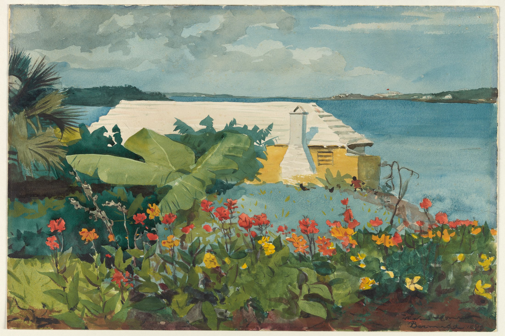

Flowers close. Sea far.
Red holds the eye. Blue gives it somewhere to go.

Winslow Homer · 1899 · Watercolor and graphite on off-white wove paper · 35.4 × 53.2 cm
Object record / Facts
Flower Garden and Bungalow, Bermuda, 1899, by Winslow Homer. Accession 10.228.10; The Metropolitan Museum of Art. Medium and dimensions appear above. The museum identifies the stepped white limestone roof as a local feature used to collect rainwater. Object record and rights
Composition / Through the garden
Start at the bottom. Flowers and leaves form a porous barrier rather than a decorative frame. The red blooms rise and fall across the sheet; thin stems lift the gaze. Palms and broad leaves load the left side, while open water releases the right. Between them, the white roof gathers the busy foreground into a firm horizontal shape that echoes the distant shoreline. Because leaves obscure part of the house, the view feels close to a body standing inside the garden.
Color / Two relationships at once
Blue water and the yellow-orange wall create a near-complementary warm–cool relationship; red flowers and green leaves create another. Neither relies on equally saturated opposites. Foliage shifts from yellow-green to dark teal, and the blues contain gray, leaving brighter reds room to speak. The roof offers the largest high-value resting place. Against dark green, a red bloom appears more vivid: an observable instance of simultaneous contrast, without implying that Homer consciously followed a named theory.
Light / A pause in white
Clouds and water vary subtly in value, keeping the open areas airy. The bright roof and blue-gray chimney side give the house volume with little modeling. Overlapping values separate the leaves. Every plant need not become a fully shaded object: a few decisive shadows establish the daylight within an otherwise broad arrangement of flat shapes.
Technique / Soft air, firm edges
The documented medium is watercolor and graphite. In the reproduction, sky and sea have the appearance of continuous transparent washes. Flowers register as brief patches; stems, leaf veins and roof steps depend on firmer lines or edges. Softness supplies atmosphere, definition supplies recognition. A reproduction cannot establish exactly where wet-in-wet painting, dry work or lifting occurred; these are observations of visible effects, not a reconstruction of the process.
Artist context / Facts
Homer (1836–1910) was an American painter who began in printmaking and magazine illustration before developing his work in oil and watercolor. He spent about six weeks in Bermuda during winter 1899–1900. These facts locate the sheet; they do not establish his private mood. Artist context
Why it moves me / Interpretation
The eye cannot leap straight into the sea. It passes living flowers, substantial leaves and an inhabited house first. The distance is almost eventless; the foreground seems to grow in every small patch. A tiny figure supplies a human scale without taking over the view. For me, the pleasure is bodily: as attention moves from density into openness, the scene seems to let the shoulders drop.
Borrow the palette / Practical suggestions
For a poster or still-life photograph, try paper cream #F3EBD4 at 40%, sea blue #629BA5 at 30%, leaf green #526B48 at 25%, and flower red #D85640 at 5%. Establish large value blocks first, then repeat red in only three to five places. Avoid making every element equally vivid. Use a dense foreground, a bright middle shape and a quiet distance; preserve some near occlusion and simplify far detail. These are suggested values and proportions, not exact samples or an artist recipe.
Sources and image

Artwork rights belong to the original creator; the museum labels this image Public Domain. Public-domain status does not confer ownership of the original artwork on the commentator. Historical facts follow the museum sources below; composition, color, light and emotional readings are independent visual analysis.